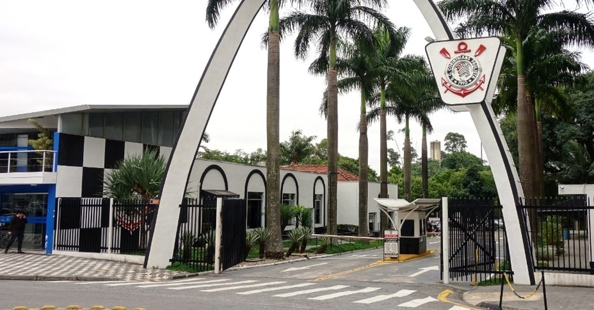
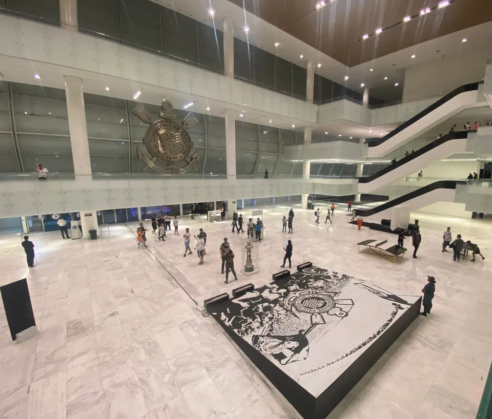

Nasci
corinthiano.
A história de quem recebeu o Corinthians de herança, do tio-avô, e descobriu que ele já estava dentro do coração desde o primeiro dia.
Conheça minha história Agende seu tourAntes de eu nascer, o futebol já estava aqui.
Antes de nascer
Minha família sempre foi muito ligada ao futebol. Antes de eu nascer, o esporte já fazia parte da nossa casa.
Meu tio-avô
Uma pessoa muito importante para mim. Desde pequeno, foi ele quem me incentivou a ser corinthiano.
Nasci corinthiano
Eu brinco que, mesmo sem o incentivo dele, eu seria corinthiano do mesmo jeito. O Corinthians nasceu dentro de mim no primeiro dia da minha vida.
Há 19 anos sou corinthiano.
Desde o primeiro dia da minha vida.
Fundado por trabalhadores, feito para o povo.
1910, Bom Retiro
O Corinthians nasceu em 1910, no bairro do Bom Retiro, em São Paulo, criado por trabalhadores. Desde o começo, foi o clube de quem não tinha voz.
Democracia Corinthiana
Jogadores como Sócrates, Casagrande, Wladimir e Zenon criaram um movimento em que as decisões do clube eram votadas por todos, do presidente ao roupeiro, em plena ditadura militar. Futebol também é cidadania.
Os valores que me fazem corinthiano.
Povo
O clube de quem trabalha, sofre e comemora junto.
Democracia
Todo mundo tem voz, dentro e fora de campo.
União
A Fiel vai junto, nos bons e nos maus momentos.
Herança
O que recebi da minha família e quero passar adiante.
Conheça os lugares que fazem parte da nossa história.
Parque São Jorge

Conhecido como a casa do Corinthians, o Parque São Jorge é a sede social do clube e um dos lugares mais importantes da sua história. É um espaço que representa as tradições, as conquistas e a trajetória do Timão ao longo dos anos.
Neo Química Arena

Localizada em Itaquera, a Neo Química Arena é a casa da Fiel nos jogos do Corinthians. Inaugurada em 2014, tornou-se um dos principais símbolos do clube e um lugar especial para os torcedores viverem grandes emoções.